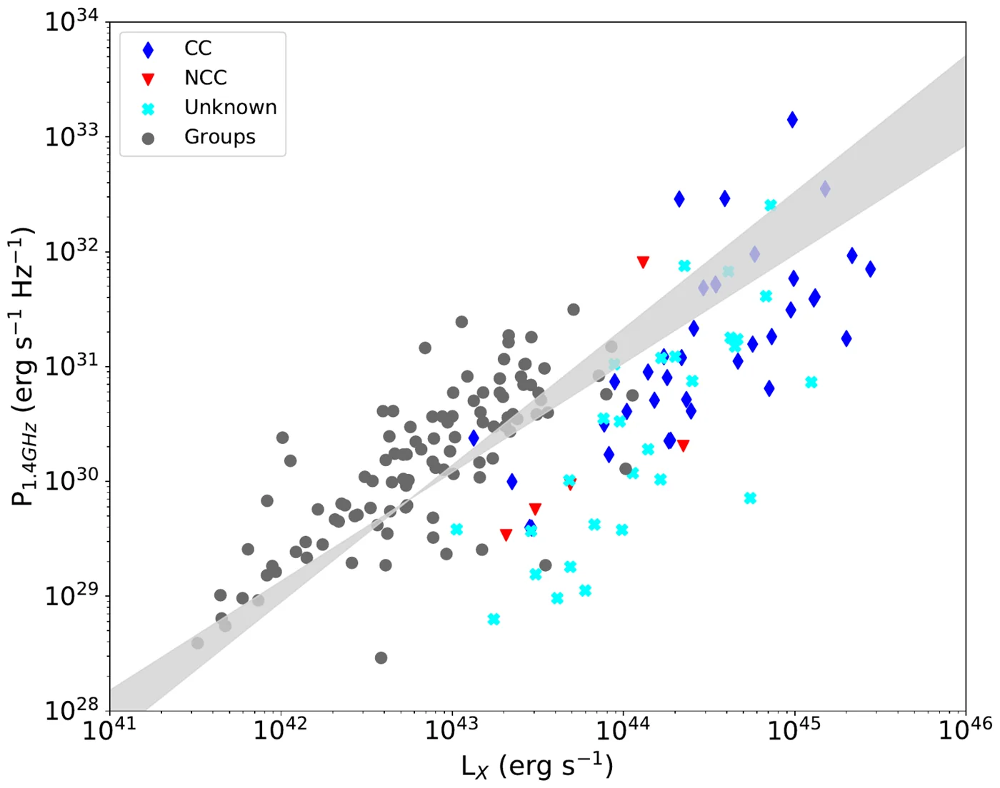
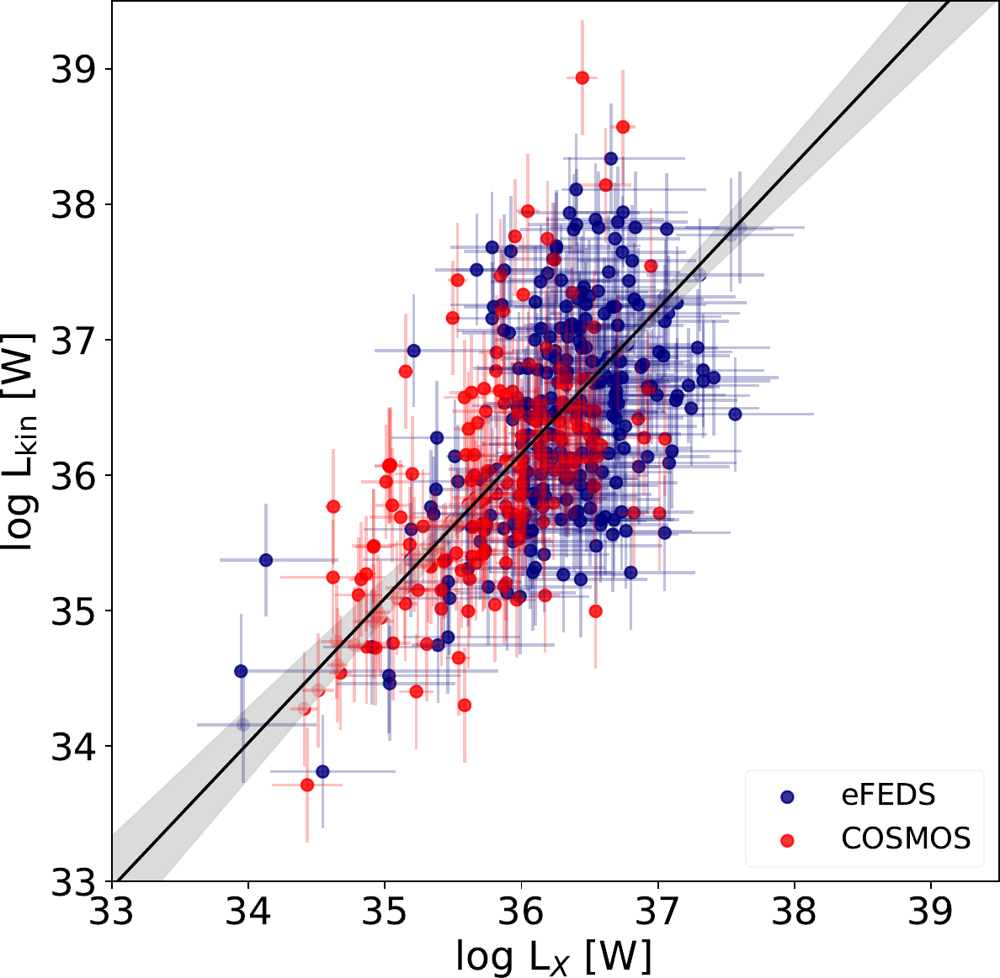

AGN feedback from groups to clusters
Do the feedback loops seen in massive clusters also operate in galaxy groups? In 247 X-ray groups in COSMOS, groups and clusters follow the same correlation between the X-ray luminosity of the hot gas and the radio power of the central galaxy, and groups host large radio galaxies more often (Pasini et al. 2020). The most powerful group radio galaxies always sit within 0.2 Rvir of the group centre (Pasini et al. 2021).
With LOFAR I identified radio galaxies in 227 brightest cluster galaxies of the 542 clusters and groups in the eROSITA eFEDS field, and compared their jet power with the X-ray luminosity of their hosts (Pasini et al. 2022).

